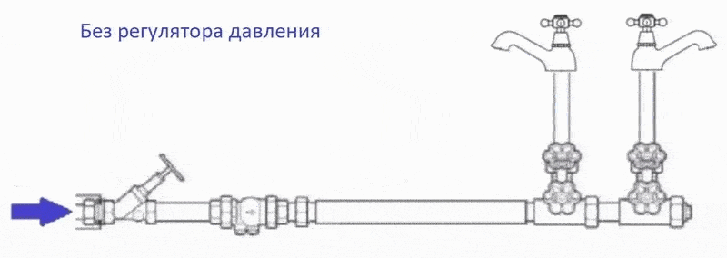

| Месяца => | 1 | 2 | 3 | 4 | 5 | 6 |
|---|---|---|---|---|---|---|
| Проверка шкивов и ремней | ||||||
| Чистка роликов подачи материала | ||||||
| Смазка направляющих рельс | ||||||
| Проверка капы | ||||||
| Проверка вайпера | ||||||
| Проверка демферов | ||||||
| Замена демферов | ||||||
| Замена фильтра тонкой очистки |
Беглый осмотр на повреждение ремня, шестерней или иных механических деталей. Ремень должен быть натянут и не стёрт. Шестерни должны быть целыми, без трещин
Протри влажными салфетками или мокрой тряпкой. Не использовать спирт или растворители! Плёнка не должна проскальзывать через ролики, опусти их на плёнку, слегка потяни и поймешь
Проведи пальцем по рабочей поверхности направляющей рельсы. Если палец скользкий и скрежета при работе принтера нет, то не нужно смазывать. Иначе используй любую смазку для механизмов. Не советую использовать «WD-40», слишком жидкая, капает и хватает не на долго. Просто нанеси на рабочую поверхность направляющей, при работе принтер ее размажет по всей области
Капа должна быть мягкой, как ластик. Её функция герметично прижиматься к голове, чтоб она не сохла. Иначе заменить.
Ракель должен быть ровным, и не искажен. Он должен снимать излишки краски с зеркала головы. Иначе заменить.
Цель: в демфере не должно быть воздуха
Через демпфер чернила поступают в печатающую голову
Функции демфера
Защита головы от гидравлического удара
Не пропускать воздух в печатающую голову
Дополнительная фильтрация чернил